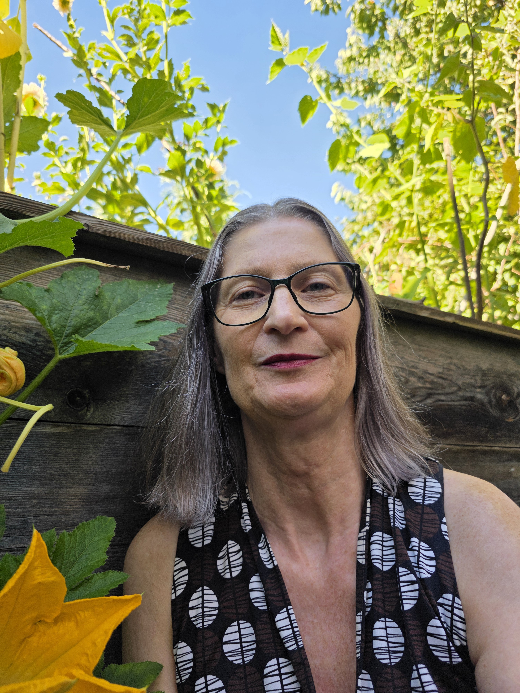

Mag.a Isabelle Zajic
Psychotherapeutin in Ausbildung unter Lehrsupervision
Psychoanalytisch-Psychodynamische Therapie
Kontakt
+43 676 6028638 kbt@cnh.at Maximilianstraße 3 / 2. Stock6020 Innsbruck
Sie können mich telefonisch, per sms oder e-mail kontaktieren.

Angebot
Psychotherapie unterstützt Sie dabei, Lebenskrisen zu meistern, psychisches Leid zu lindern und Ihre Lebensqualität nachhaltig zu verbessern. In einem geschützten Rahmen können die für Sie wichtigen Anliegen, Fragestellungen und Belastungen besprochen und eingeordnet werden. Über Gespräche und Angebote (Arbeit mit Gegenständen, achtsame Körperwahrnehmung etc.) machen wir uns gemeinsam auf den Weg, bestehende Denkmuster, Wahrnehmungen, Gefühle und Handlungsmöglichkeiten zu erkunden. Durch eine wachsende innere Verbindung mit sich selbst, kann das eigene Erleben schrittweise besser verstanden und neue Erfahrungen gemacht und integriert werden. Dies eröffnet die Möglichkeit die Beziehung zu sich selbst, zu anderen Menschen und Alltagssituationen bewusster wahrzunehmen und förderlicher zu gestalten.
Kosten und Dauer
Da ich mich aktuell in Ausbildung unter Lehrsupervision befinde, ist eine Abrechnung mit der ÖGK nicht möglich. Meine Tarife sind entsprechend angepasst. Wenn Sie eine Zusatzversicherung haben: Diese übernehmen möglicherweise die Kosten bzw. einen Kostenanteil für Psychotherapie. Die Dauer der Psychotherapie richtet sich nach Ihren Zielen und der jeweiligen Problemstellung.
Meine beruflichen Erfahrungen
- Netzwerk St. Josef - Konzeptarbeit
- arbas - Arbeitsassistentin für erwachsene Menschen mit Beeinträchtigung
- SÖB Ho&Ruck - Sozialarbeit für langzeitarbeitslose Männer und Frauen
- SÖB S'Gwandtl - Sozialarbeit für langzeitarbeitslose Frauen
- Tirolkliniken - Praktikum Station B5/Abteilung für Psychotherapie und Psychosomatik
- Reha ProMente Sonnenpark Lans - Praktikum
Meine Ausbildungen
- ÖAKBT Fachspezifikum - Konzentrative Bewegungstherapie (KBT) lfd.
- Lehrgang Psychotherapeutisches Propädeutikum
- Studium der Politikwissenschaften und FB (Pädagogik)
- Diverse Fortbildungen zum Thema Behinderung, Trauer, Sexualität etc.